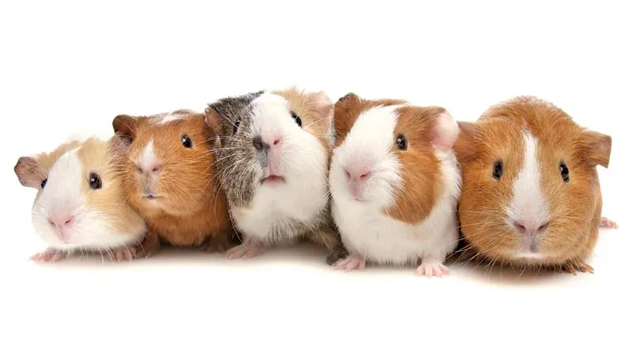

Watch this informative video on how to properly care for guinea pigs. From diet and housing to socialization and
grooming, this video provides essential tips for both new and experienced guinea pig owners to ensure their pets
live happy and healthy lives.
Audio Section
Sounds of Guinea Pigs
Listen to the delightful sounds that guinea pigs make! This audio clip features various vocalizations, including
wheeks, purrs, and chattering, offering insight into what these charming pets are communicating. Learn how to
interpret their sounds and understand their moods.
Image Section
A happy guinea pig exploring its habitat.
Guinea pigs, also known as cavies, are small, social rodents native to the Andes mountains in South America.
Known for their friendly nature and variety of colors and patterns, they make wonderful pets. They thrive in
pairs or small groups and enjoy interaction with their owners.

Info Section
Title:About Guinea Pigs
Scientific Name:Cavia porcellus
Lifespan:4 to 6 years (average)
Size:8 to 12 inches in length
Diet:
High-quality hay (timothy hay is preferred)
Fresh vegetables (such as bell peppers and leafy greens)
Limited pellets designed for guinea pigs
Housing:
A spacious cage with proper ventilation
Bedding options like aspen shavings or paper-based bedding
Social Needs:
Guinea pigs are highly social animals and thrive with companions. It’s recommended to keep them in
pairs or small groups.
Behavior:
They are known for their playful and curious personalities. Regular interaction and enrichment
activities, like tunnels and chew toys, keep them stimulated.